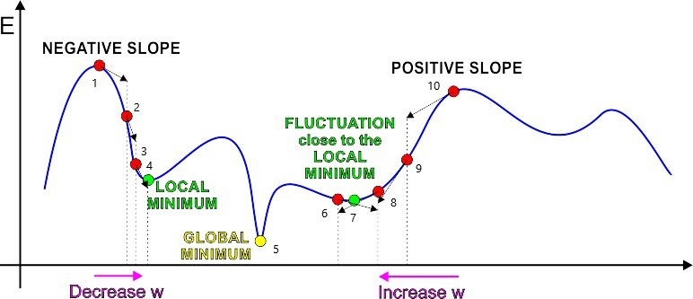
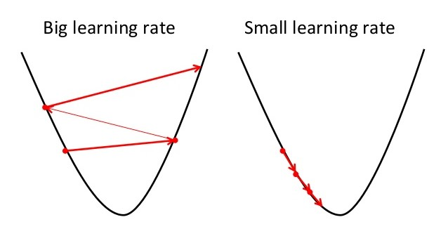

Gradient descent - Single variable
Introduction
Let's say someone asks you a simple question, "Tell me the value a>0 that results in the value of function, f(a)=2a, equals to 10.
Easy one right!!. Intutively,one would substitute different values of 'a' , i.e. a={1,2,3,4,5..} and at a=5 we get f(a)=10.
This is what gradient decent does. Well, not exactly, but the motive is same, and the question is little different.
Again, if someone asks you a different question, "For what value of a,b & c, the function
is minimum? This is called minimizing a function and gradient descent is an expert in finding the minimum of a
convex function.
Description
As the name suggests, Gradient means "slope" & Descent means "to go down". Gradient Descent follows the slope of the curve and
descends("goes down") to those combination of parameters in the function which gives the minimum value.
Imagine the plot of our function E(w) is like this:

Source: http://home.agh.edu.pl/~horzyk/lectures/ai/ann.php
Note: Ideally we want to reach at the Global Minimum (5), but Gradient descent doesnot guarantee that we will reach the global minimum
Algorithm and Intuition
To find the value of w that results in minimum E, we first chose a starting point, i.e. initial value of w.
Our initial value of w can be on either of two places:
- Case 1: Initial value of w is on the falling edge, i.e point 1.
- Case 2: Initial value of w is on the rising edge, i.e point 10
In this case, Gradient descent will try to reach at 4,i.e. the local minimum. Ideally we want to reach at the global minimum,
but since gradient decent always decends and never climbs, once at 4 it will never climb up to jump to 5.
At the falling edge 1 the slope of the function E(w), i.e.
is negative. Hence, to go down the slope, we have to increase the value of w, in small steps. The size of these steps is called Learning rate, commonly denoted as "α ".
At the rising edge 10 the slope of the function E(w), i.e. is positive. Hence, to go down the slope, we have to decrease the value of w, in small steps.
Forming equation
So far, so good. One thing is clear, wherever we encounter a positive slope, we have to decrease the value of parameter w
by a small step α and wherever we encounter a negative slope, we have to increase the value of parameter w by α.
We just describe our understanding in form of an equation, which is also known as the "update rule" .
Repeat until convergence (until the slope reaches zero):
w:=w-α()
In this form :
When the slope
is positive, we end up subtracting α()
from w in this step, since ( -(positive value) = negative value) .
When the slope
is negative, we end up adding α()
to w in this step, since ( -(negative value) = positive value).
Some important points you should know :
- Gradient descent is sensitive to initial value of parameters.
- It is important to chose the appropriate value of learning rate (α).
- After every step,the change in parameters keeps decreasing and at minima, reaches zero.
If we chose 1 as our starting point for w then we are more likely to end up at the local minimum 4. If we chose 10 as starting point for w then we
are more lileky to end up at the local minimum 7.
Ideally, we should chose the starting value of w, some where near 5. Well, there is no way of knowing this and this stays a drawback of gradient
descent.
As we have seen, α decides how much we increase or decrease the value of parameters at each step.

If the value of α is too high , we may end up bouncing between two points and may never reach minima.
If the value of α is too low , we will proceed towards minima very slowly and thus the algorithm may take very long time to converge
In the function w:=w-α() , the slope () keeps decreasing as we go down the curve and diminishes to zero on reaching minima. This is an important check to see if our implementation of Gradient descent is correct.
Application:
1) Gradient descent is generaly used to find the value of parameters which result in minimum error.

Source: http://wiki.fast.ai/index.php/Gradient_Descent
For example, if we want to find the line which best fits the data, we would form a cost function that measures the
distance of point from the line as error. If the point lies on the line the error is zero, the more the distance of point
from the line, the more is the error.
For a given set of points, we form an error function, and implement a gradient descent to find such parameters of the line
which results in minumum overall error. I have discussed more on this in my tutorial on Linear regression.
2)By the sign in our update rule to w:=w+α()
, gradient descent can be changed to gradient ascent to find the maxima of a function.
Summary:
We saw the intuition behind gradient descent. We also understood the importance of α and initial value of w. The same working of gradient descent can be expanded to functions with multiple variable.